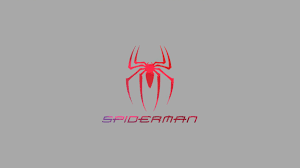

About Spider-Man

Spider-Man: The Hero Behind the Mask
: Real Name: Peter Benjamin Parker
: Creators: Stan Lee (writer) & Steve Ditko (artist)
: First Appearance: Amazing Fantasy #15 (August 1962)
: Publisher: Marvel Comics
Origin Story
Peter Parker was a nerdy, awkward high school student in Queens, New York, raised by his Aunt May and Uncle Ben.
While attending a science exhibit, Peter is bitten by a radioactive spider, gaining superhuman powers:
: Super strength & agility
: Ability to cling to surfaces
: “Spider-sense” (danger detection)
: Later: Builds web-shooters and creates his own web fluid
After using his powers selfishly and indirectly causing his Uncle Ben’s death, Peter learns the iconic lesson:
"With great power comes great responsibility."
This drives him to become Spider-Man, protector of New York City.
Major Themes
Responsibility vs. Power
Identity: Balancing life as Peter Parker and Spider-Man
Loss: From Uncle Ben to Gwen Stacy, loss shapes Peter's growth
Outsider narrative: Peter is never truly accepted, even as a hero
Coming of Age: One of the first teen heroes who isn't a sidekick
Powers & Abilities
Wall-crawling
Spider-sense
Superhuman strength, speed, reflexes, and durability
Genius-level intellect - skilled in chemistry, engineering
Web-shooters - create synthetic web fluid
Hand-to-hand combat training over time (taught by Captain America & Shang-Chi)
Iconic Villains
Spider-Man's rogues' gallery is one of the most famous in comics:
Green Goblin (Norman Osborn) - His arch-nemesis
Doctor Octopus (Otto Octavius)
Venom (Eddie Brock)
The Lizard (Dr. Curt Connors)
Sandman, Electro, Rhino, Vulture, Mysterio
Kingpin, Kraven the Hunter, Morbius
Key Storyline
s
The Night Gwen Stacy Died
- One of the most famous deaths in comic history. Peter's failure to save Gwen marks a major loss.
The Clone Saga
- Introduced Ben Reilly (Scarlet Spider), a Peter clone. Confusing and controversial, but iconic.
Kraven's Last Hunt
- Dark and psychological; Kraven defeats and buries Spider-Man, taking his place to “prove” he’s better.
One More Day
- After Aunt May is shot, Peter makes a deal with Mephisto (a demon) to save her—erasing his marriage to Mary Jane from reality.
Spider-Verse
- Introduces the multiverse of Spider-People, including Miles Morales, Spider-Gwen, Spider-Man Noir, and more.
Alternate Versions of Spider-Man
Miles Morales (Ultimate Universe)
- Afro-Latino teen who becomes Spider-Man after Peter dies in his universe
Spider-Gwen (Gwen Stacy as Spider-Woman)
Spider-Man 2099 (Miguel O'Hara, futuristic Spidey)
Spider-Ham (cartoon pig version - Peter Porker)
Superior Spider-Man - Doctor Octopus takes over Peter's body and tries to be a better Spider-Man
Noir, India, Punk, and more - seen in Into the Spider-Verse
Spider-Man in Film & TV
Live-action Films:
Tobey Maguire (Sam Raimi's trilogy, 2002-2007)
Andrew Garfield (The Amazing Spider-Man, 2012-2014)
Tom Holland (MCU, 2016-present)
Animation:
Spider-Man: The Animated Series (1994)
Spectacular Spider-Man (2008) - critically acclaimed
Spider-Man: Into the Spider-Verse (2018) & Across the Spider-Verse (2023)
Cultural Impact
One of Marvel's flagship characters
A symbol of perseverance and relatability
Massive influence in pop culture, video games, merchandise, and memes
Inspired generations of readers and creators